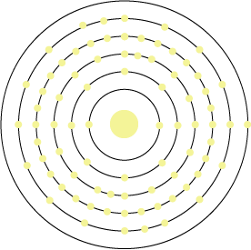

Name: Gold
Formula: Au
Atomic Number: 79
Group: 11
Block: d
Relative Atomic Mass:196.967
Discovery Date: approx. 3000BC
Appearance: A soft metal with a characteristic yellow colour
Uses: Stored as bullion. Jewellery, coinage, art, dentist creating gold fillings, industrial catalysts.
Atomic Structure: 2,8,18,32,18,1
